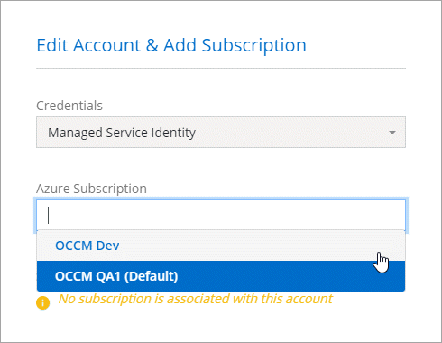
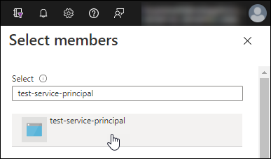
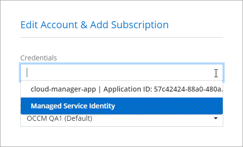
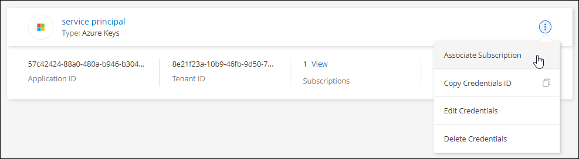

发行说明
发行说明
管理BlueXP的Azure凭据和市场订阅
 建议更改
建议更改
添加和管理Azure凭据、以便BlueXP拥有在Azure订阅中部署和管理云资源所需的权限。如果您管理多个 Azure Marketplace 订阅，则可以从 " 凭据 " 页面将其中每个订阅分配给不同的 Azure 凭据。
如果您需要使用多个 Azure 凭据或多个适用于 Cloud Volumes ONTAP 的 Azure Marketplace 订阅，请按照此页面上的步骤进行操作。
概述
可以通过两种方式在BlueXP中添加其他Azure订阅和凭据。
-
将其他 Azure 订阅与 Azure 托管身份关联。
-
如果要使用不同的Azure凭据部署Cloud Volumes ONTAP 、请使用服务主体授予Azure权限、并将其凭据添加到BlueXP。
将其他Azure订阅与托管身份关联
通过BlueXP、您可以选择要在其中部署Cloud Volumes ONTAP 的Azure凭据和Azure订阅。除非关联，否则您无法为托管身份配置文件选择其他 Azure 订阅 "托管身份" 这些订阅。
托管身份为 "初始 Azure 帐户" 从BlueXP部署Connector时。部署Connector时、BlueXP创建了BlueXP操作员角色并将其分配给Connector虚拟机。
-
登录 Azure 门户。
-
打开 * 订阅 * 服务，然后选择要部署 Cloud Volumes ONTAP 的订阅。
-
选择*访问控制(IAM)*。
-
选择*添加*>*添加角色分配*、然后添加权限：
-
选择* BlueXP操作员*角色。

BlueXP操作员是Connector策略中提供的默认名称。如果您为角色选择了其他名称，请选择该名称。 -
分配对 * 虚拟机 * 的访问权限。
-
选择创建 Connector 虚拟机的订阅。
-
选择 Connector 虚拟机。
-
选择 * 保存 * 。
-
-
-
对其他订阅重复这些步骤。
创建新的工作环境时，您现在应该能够为托管身份配置文件从多个 Azure 订阅中进行选择。

向BlueXP添加其他Azure凭据
从BlueXP部署Connector时、BlueXP会在具有所需权限的虚拟机上启用系统分配的托管身份。默认情况下、在为Cloud Volumes ONTAP 创建新工作环境时、BlueXP会选择这些Azure凭据。

|
如果在现有系统上手动安装 Connector 软件，则不会添加一组初始凭据。 "了解 Azure 凭据和权限"。 |
如果您要使用_MASSE_ Azure凭据部署Cloud Volumes ONTAP、则必须通过在Microsoft Entra ID中为每个Azure帐户创建和设置服务主体来授予所需的权限。然后、您可以将新凭据添加到BlueXP。
使用服务主体授予Azure权限
BlueXP需要在Azure中执行操作的权限。您可以通过在Microsoft Entra ID中创建和设置服务主体并获取BlueXP所需的Azure凭据来为Azure帐户授予所需权限。
下图展示了BlueXP如何获取在Azure中执行操作的权限。与一个或多个Azure订阅绑定的服务主体对象在Microsoft Entra ID中表示BlueXP、并分配给允许所需权限的自定义角色。

创建Microsoft Entra应用程序
创建BlueXP可用于基于角色的访问控制的Microsoft Entra应用程序和服务主体。
-
确保您在Azure中拥有创建Active Directory应用程序和将应用程序分配给角色的权限。
有关详细信息，请参见 "Microsoft Azure 文档：所需权限"
-
从Azure门户中，打开*Microsoft Entra ID*服务。

-
在菜单中、选择*应用程序注册*。
-
选择*新建注册*。
-
指定有关应用程序的详细信息：
-
* 名称 * ：输入应用程序的名称。
-
帐户类型：选择帐户类型(任何将适用于BlueXP)。
-
* 重定向 URI* ：可以将此字段留空。
-
-
选择 * 注册 * 。
您已创建 AD 应用程序和服务主体。
您已创建 AD 应用程序和服务主体。
将应用程序分配给角色
您必须将服务主体绑定到一个或多个Azure订阅并为其分配自定义"BlueXP操作员"角色、以便BlueXP在Azure中具有权限。
-
创建自定义角色：
请注意、您可以使用Azure门户、Azure PowerShell、Azure命令行界面或REST API创建Azure自定义角色。以下步骤显示了如何使用Azure命令行界面创建角色。如果您希望使用其他方法、请参见 "Azure 文档"
-
复制的内容 "Connector的自定义角色权限" 并将其保存在JSON文件中。
-
通过将 Azure 订阅 ID 添加到可分配范围来修改 JSON 文件。
您应该为每个 Azure 订阅添加 ID 、用户将从中创建 Cloud Volumes ONTAP 系统。
-
示例 *
"AssignableScopes": [ "/subscriptions/d333af45-0d07-4154-943d-c25fbzzzzzzz", "/subscriptions/54b91999-b3e6-4599-908e-416e0zzzzzzz", "/subscriptions/398e471c-3b42-4ae7-9b59-ce5bbzzzzzzz" -
-
使用 JSON 文件在 Azure 中创建自定义角色。
以下步骤介绍如何在 Azure Cloud Shell 中使用 Bash 创建角色。
-
start "Azure Cloud Shell" 并选择 Bash 环境。
-
上传 JSON 文件。

-
使用Azure命令行界面创建自定义角色：
az role definition create --role-definition Connector_Policy.json现在、您应该拥有一个名为BlueXP操作员的自定义角色、可以将该角色分配给Connector虚拟机。
-
-
-
将应用程序分配给角色：
-
从 Azure 门户中，打开 * 订阅 * 服务。
-
选择订阅。
-
选择*访问控制(IAM)>添加>添加角色分配*。
-
在*角色*选项卡中、选择* BlueXP操作员*角色、然后选择*下一步*。
-
在 * 成员 * 选项卡中，完成以下步骤：
-
保持选中 * 用户，组或服务主体 * 。
-
选择*选择成员*。

-
搜索应用程序的名称。
以下是一个示例：

-
选择应用程序并选择*选择*。
-
选择 * 下一步 * 。
-
-
选择*审核+分配*。
现在，服务主体具有部署 Connector 所需的 Azure 权限。
如果要从多个 Azure 订阅部署 Cloud Volumes ONTAP ，则必须将服务主体绑定到每个订阅。通过BlueXP、您可以选择要在部署Cloud Volumes ONTAP 时使用的订阅。
-
添加 Windows Azure 服务管理 API 权限
服务主体必须具有 "Windows Azure 服务管理 API" 权限。
-
在*Microsoft Entra ID*服务中，选择*App Registrations *并选择应用程序。
-
选择* API权限>添加权限*。
-
在 * Microsoft APIs* 下，选择 * Azure Service Management* 。

-
选择*以组织用户身份访问Azure服务管理*、然后选择*添加权限*。

获取应用程序 ID 和目录 ID
将Azure帐户添加到BlueXP时、您需要提供应用程序(客户端) ID和目录(租户) ID。BlueXP使用ID以编程方式登录。
-
在*Microsoft Entra ID*服务中，选择*App Registrations *并选择应用程序。
-
复制 * 应用程序（客户端） ID* 和 * 目录（租户） ID* 。

将Azure帐户添加到BlueXP时、您需要提供应用程序(客户端) ID和目录(租户) ID。BlueXP使用ID以编程方式登录。
创建客户端密钥
您需要创建一个客户端密钥、然后向BlueXP提供该密钥的值、以便BlueXP可以使用它通过Microsoft Entra ID进行身份验证。
-
打开*Microsoft Entra ID*服务。
-
选择*应用程序注册*并选择您的应用程序。
-
选择*证书和机密>新客户端机密*。
-
提供密钥和持续时间的问题描述。
-
选择 * 添加 * 。
-
复制客户端密钥的值。

现在、您有了一个客户端密钥、BlueXP可以使用它通过Microsoft Entra ID进行身份验证。
此时，您的服务主体已设置完毕，您应已复制应用程序（客户端） ID ，目录（租户） ID 和客户端密钥值。添加Azure帐户时、您需要在BlueXP中输入此信息。
将凭据添加到BlueXP
在为Azure帐户提供所需权限后、您可以将该帐户的凭据添加到BlueXP。完成此步骤后，您可以使用不同的 Azure 凭据启动 Cloud Volumes ONTAP 。
如果您刚刚在云提供商中创建了这些凭据，则可能需要几分钟的时间才能使用这些凭据。请等待几分钟、然后再将凭据添加到BlueXP。
您需要先创建Connector、然后才能更改BlueXP设置。 "了解如何创建 Connector"。
-
在BlueXP控制台的右上角、选择设置图标、然后选择*凭据*。

-
选择*添加凭据*并按照向导中的步骤进行操作。
-
* 凭据位置 * ：选择 * Microsoft Azure > Connector* 。
-
定义凭据：输入有关授予所需权限的Microsoft Entra服务主体的信息：
-
应用程序(客户端) ID
-
目录(租户) ID
-
客户端密钥
-
-
* 市场订阅 * ：通过立即订阅或选择现有订阅，将市场订阅与这些凭据相关联。
-
查看：确认有关新凭据的详细信息、然后选择*添加*。
-
现在，您可以从 " 详细信息和凭据 " 页面切换到不同的凭据集 "创建新的工作环境时"

管理现有凭据
通过关联Marketplace订阅、编辑凭据并将其删除、管理已添加到BlueXP的Azure凭据。
将Azure Marketplace订阅与凭据关联
将Azure凭据添加到BlueXP后、您可以将Azure Marketplace订阅与这些凭据相关联。通过订阅、您可以创建按需购买的Cloud Volumes ONTAP 系统并使用其他BlueXP服务。
在以下两种情况下、您可能会在将凭据添加到BlueXP后关联Azure Marketplace订阅：
-
最初将凭据添加到BlueXP时、您未关联订阅。
-
您希望更改与Azure凭据关联的Azure Marketplace订阅。
将当前市场订阅替换为新订阅会改变任何现有Cloud Volumes ONTAP工作环境和所有新工作环境的市场订阅。
您需要先创建Connector、然后才能更改BlueXP设置。 "了解如何操作"。
-
在BlueXP控制台的右上角、选择设置图标、然后选择*凭据*。
-
选择一组凭据的操作菜单，然后选择*关联订阅*。
您必须选择与连接器关联的凭据。您不能将商城订阅与BlueXP关联的凭据关联。

-
要将凭据与现有订阅关联、请从下拉列表中选择此订阅、然后选择*关联*。
-
要将凭据与新订阅关联、请选择*添加订阅>继续*、然后按照Azure Marketplace中的步骤进行操作：
-
如果出现提示、请登录到您的Azure帐户。
-
选择*订阅*。
-
填写表单并选择*订阅*。
-
订阅过程完成后、选择*立即配置帐户*。
您将重定向到BlueXP网站。
-
在*订阅分配*页面中：
-
选择要与此订阅关联的BlueXP帐户。
-
在*替换现有订阅*字段中、选择是否要将一个帐户的现有订阅自动替换为此新订阅。
此新订阅将取代帐户中所有凭据的现有订阅。如果一组凭据从未与订阅关联、则此新订阅将不会与这些凭据关联。
对于所有其他帐户、您需要重复上述步骤来手动关联订阅。
-
选择 * 保存 * 。
以下视频显示了从Azure Marketplace订阅的步骤：
-
从Azure Marketplace订阅BlueXP -
编辑凭据
通过修改Azure服务凭据的详细信息、在BlueXP中编辑Azure凭据。例如，如果为服务主体应用程序创建了新密钥，则可能需要更新客户端密钥。
-
在BlueXP控制台的右上角、选择设置图标、然后选择*凭据*。
-
在*帐户凭据*页面上、选择一组凭据的操作菜单、然后选择*编辑凭据*。
-
进行所需更改、然后选择*应用*。
删除凭据
如果您不再需要一组凭据、可以从BlueXP中删除这些凭据。您只能删除与工作环境无关的凭据。
-
在BlueXP控制台的右上角、选择设置图标、然后选择*凭据*。
-
在*帐户凭据*页面上、选择一组凭据的操作菜单、然后选择*删除凭据*。
-
选择*删除*进行确认。